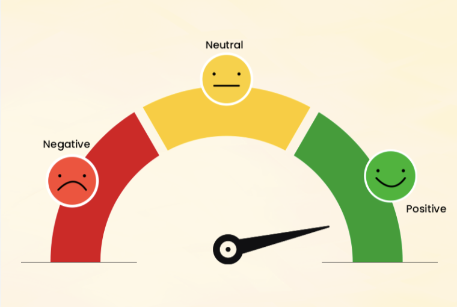

A stroke is a brain attack, cutting off crucial blood flow and oxygen to the brain. A stroke arises when a blood artery feeding the brain gets clogged or bursts. Identifying stroke and taking medical action immediately can not only lengthen life but also help to prevent heart disease in the future. The datasets have been taken from the Kaggle website. SVMSMOTE algorithm is used for oversampling from minority classes with undersampling algorithm Random undersampling as a hybrid technique for Balancing the imbalance data. Achieved accuracy of 95% using the Random Forest algorithm.

Created an interactive The Port of Shanghai Dashboard offers a comprehensive overview of the port's performance metrics, capturing critical operational data from 2004 to 2023. As one of the world’s busiest and most significant ports, the Port of Shanghai handles vast volumes of cargo, making operational efficiency essential for sustaining throughput and meeting global trade demands. This dashboard consolidates data on container throughput, berth utilization, cost efficiency, and resource availability, presenting a clear picture of trends over time.
Data-Driven Insights into Retail Sales
By predicting retail demand with high accuracy, this project empowers retailers to make proactive decisions that align with consumer behavior and seasonal demand. Improved forecasting accuracy reduces stockouts and overstock scenarios, while refined marketing analysis allows for targeted promotions, ultimately increasing revenue and customer satisfaction. This approach demonstrates the value of integrating advanced analytics into retail strategy to drive efficiency and profitability.

In this Social Media Sentiment Analysis project, I analyzed social media data to understand public sentiment, engagement patterns, and trending topics across platforms. By using attributes like Text, Sentiment, Timestamp, User, Platform, Hashtags, Retweets, Likes, Country, and detailed time data (Year, Month, Day, Hour), I uncovered how people feel about specific topics and how these sentiments vary by time and region. This real-time sentiment tracking enables brands to stay connected with audience preferences and reactions, whether for new product launches, crisis management, or long-term brand monitoring. These insights empower companies to be proactive, audience-focused, and more effective in driving engagement, customer satisfaction, and loyalty.
Bank Stock market analysis using tableau

Created an interactive Tableau dashboard using Goldman Sachs, NatWest, and HSBC bank data from the past 5 years. I utilized advanced Tableau features to create insightful candlestick and line graphs with filters to analyze closing and opening price trends.
{kind=link}